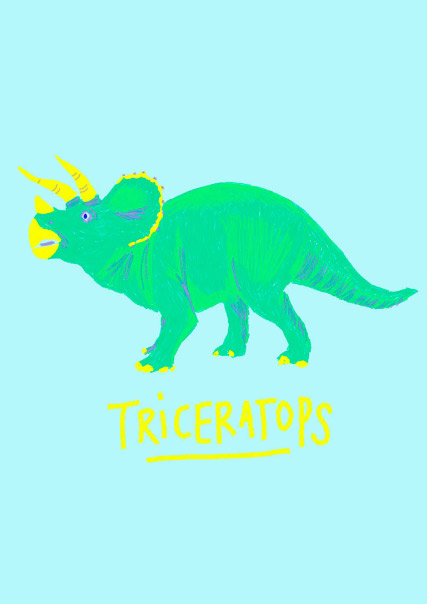

Wild
2017 / -
/Barcelona /Illustration
Vamos a Experimentar
Wild se realizó con la finalidad de probar el diseño de patterns y texturas generadas a través de la ilustración de diversos animales salvajes. Combinando las distintas ilustraciones llegaron a salir texturas interesantes.
Resultados
Wild ha llegado a colaborar con algunos de estos diseños para otras marcas online, como Stupid Clothing.
